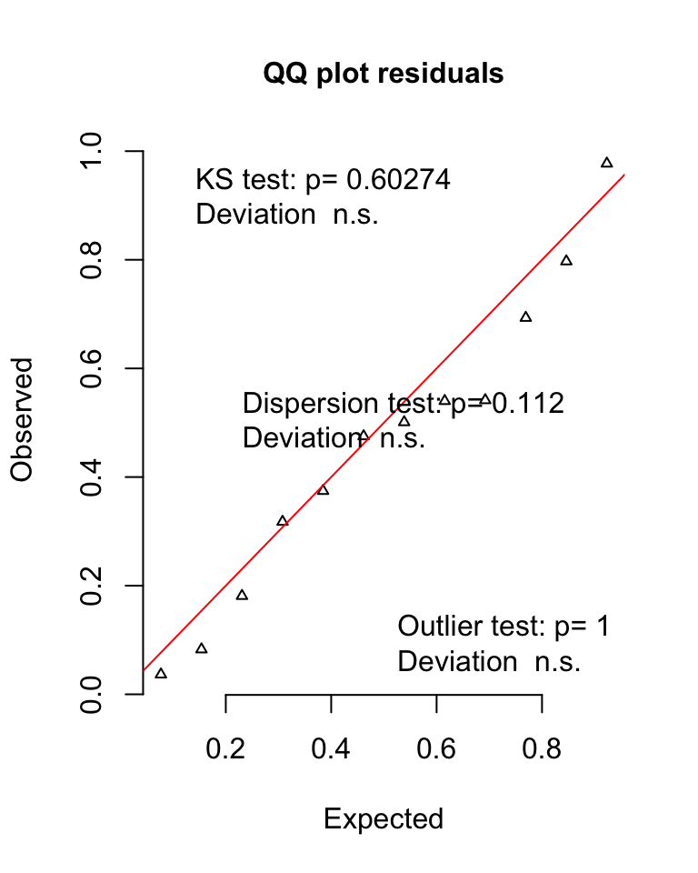
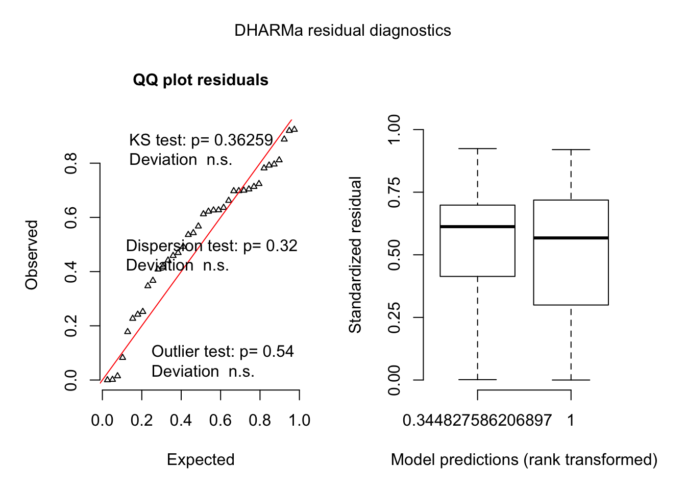

Dryas experiments
In a second experiment, we tested a reduced sample of Dryas iulia, a closely related butterfly, to test if the ability to learn associations was limited to Heliconius. 13 out of 19 D. iulia made both choices in both time periods during training, the remaining 6 were removed from further analyses. An additional individual was removed after making no feeding attempts in the final test. One cage had purple rewarded in the AM and yellow rewarded in the PM with an unreversed final test order (group 1), while the second cage had yellow rewarded in the AM and purple rewarded in the PM with a reversed final test order (group 2). In this sample only Dryas from group 2 met the training criterion (n = 6). However, since the order of the final test has no bearing on how an individual behaves during the training trials, and test order has no effect in H. hecale, we assumed this is unlikely to be problematic.
Dryas all individuals
Across analyses on Dryas learning performance we again asked whether the time of day influenced:
in subsections titled Initial preference, shifts in proportional preference for the colour rewarding in the morning when naïve, using a binomial GLMM with response variable “morning reward colour choices/afternoon reward colour choices” and fixed factor “time of day” (morning or afternoon);
in subsections titled Trained preference, shifts in proportional colour preference when trained, using the same specifications.
Identity was included as a random effect throughout.
First we subset our data to remove any individuals who did not make both colour choices in either morning or afternoon during training.
data2 = data %>% group_by(id) %>% filter(all(n.correct.training > 0 & n.incorrect.training > 0))Furthermore we remove individuals who did not respond at all during a session in final test.
data3 = data2 %>% group_by(id) %>% filter(all(n.morning.colour.test > 0 | n.afternoon.colour.test > 0))Initial preference
Model
Is there a shift in preference for colours when individuals are naive
naive.model =
glmer(cbind(n.morning.colour.initial, n.afternoon.colour.initial) ~
time.of.day + (1 | cage/id),
data= data3, family = binomial)Results
| term | estimate | std.error | statistic | p.value |
|---|---|---|---|---|
| (Intercept) | 0.511 | 0.696 | 0.734 | 0.463 |
| time.of.day2afternoon | 0.367 | 0.233 | 1.574 | 0.116 |
No, p-value = 0.11 for time of day effect
Model Residuals
Trained preference
Model
Is there a shift in preference for colours when individuals are trained?
trained.model =
glmer(cbind(n.morning.colour.test, n.afternoon.colour.test) ~
time.of.day + (1 | id),
data= data3, family = binomial)Results
| term | estimate | std.error | statistic | p.value |
|---|---|---|---|---|
| (Intercept) | 0.383 | 0.293 | 1.308 | 0.191 |
| time.of.day2afternoon | 0.001 | 0.102 | 0.012 | 0.991 |
No, p = 0.99 for time of day effect
Model Residuals
Dryas high and low performers
Remove individuals who did not achieve greater than 50% correct responses in last 2 days of training
data4 = data3 %>% group_by(id) %>% filter(all(prop.correct.training.last.2 > 0.5))Initial preference
High Performers
Model
Do individuals who perform well in last 2 days of training shift preference initially
naive.model.high.performers =
glmer(cbind(n.morning.colour.initial, n.afternoon.colour.initial) ~
time.of.day + (1 |id),
data= data4, family = binomial)Results
| term | estimate | std.error | statistic | p.value |
|---|---|---|---|---|
| (Intercept) | -0.546 | 0.466 | -1.172 | 0.241 |
| time.of.day2afternoon | 0.536 | 0.321 | 1.670 | 0.095 |
No, p = 0.09
Model Residuals

# pull out individuals below criterion
data5 = data3 %>% group_by(id) %>% filter(any(prop.correct.training.last.2 < 0.51))Model
Do individuals who were not correct at high rate shift preference initially
naive.model.low.performers =
glmer(cbind(n.morning.colour.initial, n.afternoon.colour.initial) ~
time.of.day + (1 | id),
data =data5, family = binomial)Results
| term | estimate | std.error | statistic | p.value |
|---|---|---|---|---|
| (Intercept) | 1.333 | 0.496 | 2.687 | 0.007 |
| time.of.day2afternoon | 0.148 | 0.339 | 0.437 | 0.662 |
No, p = 0.66
Model Residuals

Trained preference
High Performers
Model
Do individuals who were correct at a high rate shift preference when trained?
trained.model.high.performers =
glmer(cbind(n.morning.colour.test, n.afternoon.colour.test) ~
time.of.day + (1 | id),
data= data4, family = binomial)Results
| term | estimate | std.error | statistic | p.value |
|---|---|---|---|---|
| (Intercept) | 1.435 | 0.398 | 3.604 | < .001 |
| time.of.day2afternoon | -1.819 | 0.195 | -9.334 | < .001 |
Yes, p < 0.001 for the time of day effect. The preference for the colour that is rewarding in the morning decreased by 40%.
Figure 3: Data from colour preference trials of D. iulia meeting the training criterion. (A) Naïve preferences in the morning and afternoon. (B) Preferences of butterflies from (A) post-training. Grey lines connect individuals. Data are means ± 95% CI
Model Residuals

There’s a slight deviation due to the outlier which increases the variance in the trained afternoon session as seen in Figure 3
Model
Do individuals who were not correct at a high rate shift preference when trained
trained.model.low.performers =
glmer(cbind(n.morning.colour.test, n.afternoon.colour.test) ~
time.of.day + (1 | id),
data= data5, family = binomial)Results
| term | estimate | std.error | statistic | p.value |
|---|---|---|---|---|
| (Intercept) | 0.063 | 0.489 | 0.129 | 0.898 |
| time.of.day2afternoon | 0.992 | 0.135 | 7.354 | < .001 |
yes, slightly in the incorrect direction p < 0.001
Model Residuals

Dryas activity between time periods
To see whether there was a difference in the total number of choices a butterfly made at a particular time period we used a Poisson generalised linear mixed effect model.
Model
dryas.activity.model =
glmer(total.activity ~ time.of.day + (1 | cage/id),
data= data, family = poisson)Results
D. iulia butterflies made on average 15 more choices in the afternoon than in the morning.
Figure 4: The morning and afternoon activity values for individuual btuterflies. Data are means +/- 95% CI. Lines connects individuals across time periods
Model Residuals
